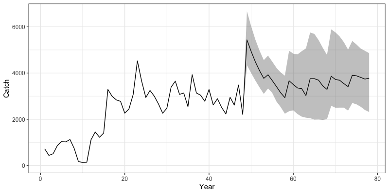
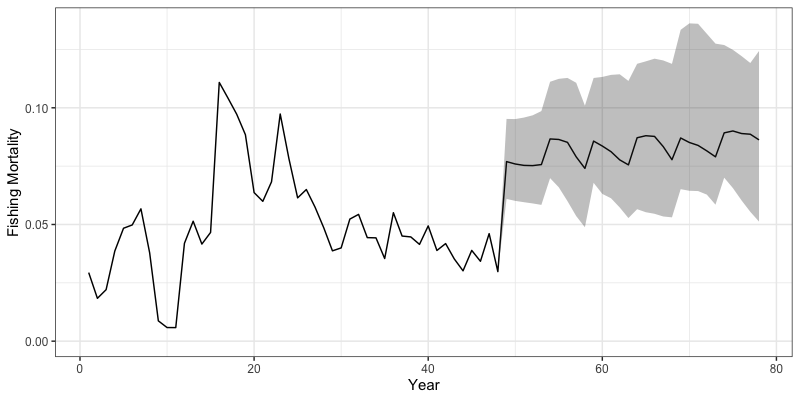
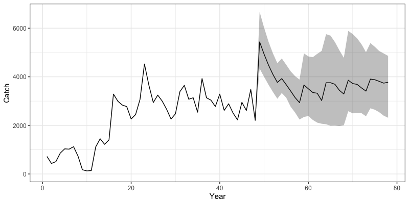
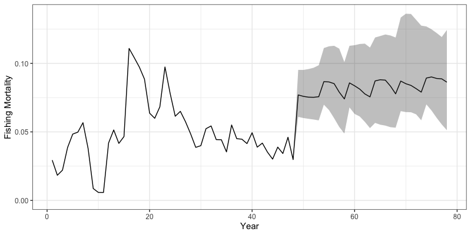

Run Closed Loop Simulations
h_closed_loop_simulations.RmdIn addition to being an estimation model, SPoRC also has
the capacity to conduct closed loop simulations to evaluate the impacts
of estimation model assumptions and harvest strategies on different
operating models. These closed loop simulations can be conducted on
either spatially-explicit or panmicitic populations. In this vignette,
we will demonstrate how to setup a single region, model conditioned
(Dusky rockfish) closed loop simulation. Closed loop simulations can
also be setup without any explicit conditioning on a given model (see
Simulation Testing vignette Cross Testing example) The vignette will
generally follow these steps:
- Define a conditioned operating model (the truth),
- Define an estimation model to use in the closed-loop simulation,
- Setup the simulation loop to run an operating and estimation model,
- Derive reference points and management advice (catch projections) using estimates from the estimation model, and
- Return management advice back into the annual cycle, completing the closed loop simulation.
Let us first load in the SPoRC package.
Define Operating Model
We can then define an operating model we want to condition a population on. Here, parameter estiamtes will be based on model results from Dusky rockfish. We will first load in the model list for Dusky rockfish and redefine variables for use to condition the closed loop simulation.
data("dusky_rtmb_model") # load in dusky rtmb model for conditioning
# define variables for use in setting up simulation
data <- dusky_rtmb_model$data
rep <- dusky_rtmb_model$rep
parameters <- dusky_rtmb_model$parameters
mapping <- dusky_rtmb_model$mapping
sd_rep <- dusky_rtmb_model$sdrepNext, we condition the closed-loop simulation using the
condition_closed_loop_simulations function. The simulation
will run for 30 additional closed-loop years, with the initial model
years serving as a burn-in period. A total of 50 simulations will be
executed, assuming that data are available every fifth year.
Accordingly, assessments will be conducted every five years, with catch
advice set five years in advance. Future recruitment will be sampled
from the burn-in period, while uncertainty in the composition data
(input sample sizes) will follow the fishing mortality pattern.
closed_loop_yrs <- 30 # number of closed loop years to do
burnin_years <- 1:length(data$years) # number of conditioning years
n_sims <- 50 # number of simulations to do
assess_freq <- 5 # assessments every 5 years
data_yr_freq <- 5 # data year frequency
# setup simulation list to condition closed loop simulations
set.seed(123) # seed for resampling
sim_list <- condition_closed_loop_simulations(closed_loop_yrs = closed_loop_yrs,
n_sims = n_sims,
data = data,
parameters = parameters,
mapping = mapping,
sd_rep = sd_rep,
rep = rep,
random = NULL,
recruitment_opt = 'resample_from_input',
ISS_FishAgeComps_fill = "F_pattern",
ISS_FishLenComps_fill = "F_pattern",
)
assessment_years <- seq(sim_list$feedback_start_yr, sim_list$n_yrs, assess_freq) # assessment years
years_to_use <- c(burnin_years, seq(sim_list$feedback_start_yr, sim_list$n_yrs, data_yr_freq)) # data yearsDefine Management Options
Following the conditioning process, we define how reference points are used to set catch advice and specify assumptions for catch projections. Reference points are based on the most recent year’s demographic rates and a single-region spawning potential ratio (SPR, $F_{40%}$). Projections follow a threshold harvest control rule (HCR) that sets fishing mortality according to stock status. Future recruitment is assumed to be deterministic at the mean, and projections extend over the assessment interval.
# reference points options
reference_points_opt <- list(
n_avg_yrs = 1, # number of years over which to average demographic rates
SPR_x = 0.4, # target spawning potential ratio
calc_rec_st_yr = 3, # year used for recruitment in bx% calculations
rec_age = 4, # age at recruitment
type = 'single_region', # reference points calculated for a single region
what = "SPR" # method for reference points calculation (SPR)
)
# projection options
proj_opt <- list(
n_proj_yrs = assess_freq + 1, # number of years to project (assessment interval + 1)
HCR_function = function(x, frp, brp, alpha = 0.05) {
stock_status <- x / brp # calculate stock status
# Determine fishing mortality based on stock status
if(stock_status >= 1) {
f <- frp # full F if stock is above reference
} else if(stock_status > alpha && stock_status < 1) {
f <- frp * (stock_status - alpha) / (1 - alpha) # scaled F if stock is between alpha and reference
} else {
f <- 0 # no fishing if stock is below threshold
}
return(f)
},
recruitment_opt = 'mean_rec', # deterministic mean recruitment
fmort_opt = 'HCR', # fishing mortality follows the HCR
bh_rec_opt = NULL # no Beverton-Holt recruitment
)Define Estimation Model
Next, we specify an estimation model (EM) function that uses
simulated data to construct a SPoRC model. The helper function
simulation_data_to_SPoRC extracts and transforms the
simulated data into the dimensions required by SPoRC. For
Dusky rockfish, a single-region model is used with one fishery and one
survey fleet. The model assumes single-sex dynamics with 30 ages and
directly fits length compositions. Most demographic rates are fixed,
consistent with the operational assessment, and both fishery and survey
selectivities are modeled as logistic. No stock-recruitment relationship
is assumed, and annual recruitment is set to the mean value with annual
deviations constrained by sigmaR.
#' Setup Estimation Model (EM) Inputs for SPoRC
#'
#' Prepares the estimation model input list for a given simulation year
#' and replicate within the SPoRC closed-loop simulation framework.
#'
#' @param sim_env Simulation environment generated by `Setup_sim_env()`.
#' @param y Integer. Current simulation year index.
#' @param sim Integer. Simulation replicate index.
#'
#' @return A fully configured EM input list suitable for fitting with `fit_model()`.
setup_em <- function(sim_env, y, sim) {
# Extract simulation data for current year and replicate
sim_data <- simulation_data_to_SPoRC(sim_env, y, sim)
# Model dimensions
input_list <- Setup_Mod_Dim(years = 1:y, # vector of years
ages = 1:sim_env$n_ages, # vector of ages
lens = 1:sim_env$n_lens, # number of lengths
n_regions = sim_env$n_regions, # number of regions
n_sexes = sim_env$n_sexes, # number of sexes
n_fish_fleets = sim_env$n_fish_fleets, # number of fishery fleet
n_srv_fleets = sim_env$n_srv_fleets, # number of survey fleets
verbose = F
)
# Recruitment setup
input_list <- Setup_Mod_Rec(
input_list = input_list,
do_rec_bias_ramp = 1, # Doing bias ramp, but basically setting it so that no lognormal bias correction happens (as in the dusky model)
bias_year = rep(length(input_list$data$years), 4),
sigmaR_switch = 1, # when to switch from early to late sigmaR (switch in first year)
ln_sigmaR = rep(-0.1068576 , 2), # 2 values for early and late sigma
# Starting values for early and late sigmaR
rec_model = "mean_rec",
sigmaR_spec = "fix", # fix early sigmaR and late sigmaR
init_age_strc = 1, # geometric series to derive initial age structure
ln_global_R0 = log(2.7), # starting value for mean_rec
t_spawn = 0 # spawn timing
)
# Biological setup
input_list <- Setup_Mod_Biologicals(
input_list = input_list,
# Data inputs
WAA = sim_data$WAA,
MatAA = sim_data$MatAA,
# Model options
fit_lengths = 1,
SizeAgeTrans = sim_data$SizeAgeTrans,
AgeingError = sim_data$AgeingError,
M_spec = "fix", # fixing natural mortality
Fixed_natmort = array(0.07, dim = c(input_list$data$n_regions, length(input_list$data$years),
length(input_list$data$ages), input_list$data$n_sexes)),
addtocomp = 0.00001
)
# Movement and tagging
input_list <- Setup_Mod_Tagging(input_list = input_list, UseTagging = 0)
input_list <- Setup_Mod_Movement(
input_list = input_list,
use_fixed_movement = 1,
Fixed_Movement = NA,
do_recruits_move = 0
)
# Fishery catch & fishing mortality
input_list <- Setup_Mod_Catch_and_F(
input_list = input_list,
# Data inputs
ObsCatch = sim_data$ObsCatch,
Catch_Type = array(1, dim = c(length(input_list$data$years), input_list$data$n_fish_fleets)),
UseCatch = sim_data$UseCatch,
# Model options
Use_F_pen = 1,
sigmaC_spec = "fix",
# Fixing sigma C and F
ln_sigmaC = sim_data$ln_sigmaC,
ln_sigmaF = array(log(sqrt(1/2)), dim = c(input_list$data$n_regions, input_list$data$n_fish_fleets))
)
# Survey selectivity and catchability
input_list <- Setup_Mod_FishIdx_and_Comps(
input_list = input_list,
# Data inputs
ObsFishIdx = sim_data$ObsFishIdx,
ObsFishIdx_SE = sim_data$ObsFishIdx_SE,
UseFishIdx = sim_data$UseFishIdx,
ObsFishAgeComps = sim_data$ObsFishAgeComps,
ObsFishLenComps = sim_data$ObsFishLenComps,
UseFishAgeComps = sim_data$UseFishAgeComps,
UseFishLenComps = sim_data$UseFishLenComps,
ISS_FishAgeComps = sim_data$ISS_FishAgeComps,
ISS_FishLenComps = sim_data$ISS_FishLenComps,
# Model options
fish_idx_type = c("none"),
FishAgeComps_LikeType = c("Multinomial"),
FishLenComps_LikeType = c("Multinomial"),
FishAgeComps_Type = c("agg_Year_1-terminal_Fleet_1"),
FishLenComps_Type = c("agg_Year_1-terminal_Fleet_1")
)
# Survey indices and compositions
input_list <- Setup_Mod_SrvIdx_and_Comps(
input_list = input_list,
# Data inputs
ObsSrvIdx = sim_data$ObsSrvIdx,
ObsSrvIdx_SE = sim_data$ObsSrvIdx_SE,
UseSrvIdx = sim_data$UseSrvIdx,
ObsSrvAgeComps = sim_data$ObsSrvAgeComps,
ObsSrvLenComps = sim_data$ObsSrvLenComps,
UseSrvAgeComps = sim_data$UseSrvAgeComps,
UseSrvLenComps = sim_data$UseSrvLenComps,
ISS_SrvAgeComps = sim_data$ISS_SrvAgeComps,
ISS_SrvLenComps = sim_data$ISS_SrvLenComps,
# Model options
srv_idx_type = c("biom"),
SrvAgeComps_LikeType = c("Multinomial"),
SrvLenComps_LikeType = c("Multinomial"),
SrvAgeComps_Type = c("agg_Year_1-terminal_Fleet_1"),
SrvLenComps_Type = c("agg_Year_1-terminal_Fleet_1")
)
# Fishery selectivity and catchability
input_list <- Setup_Mod_Fishsel_and_Q(
input_list = input_list,
# Model options
fish_sel_model = c("logist2_Fleet_1"), # fishery selex model
fish_fixed_sel_pars_spec = c("est_all"), # whether to estiamte all fixed effects for fishery selectivity
fish_q_spec = c("fix") # whether to estiamte all fixed effects for fishery catchability
)
# Survey selectivity and catchability
srv_q_prior <- data.frame(
region = 1,
block = 1,
fleet = 1,
mu = 1,
sd = 0.447213595
)
input_list <- Setup_Mod_Srvsel_and_Q(
input_list = input_list,
# Model options
srv_sel_model = c("logist2_Fleet_1"), # survey selectivity form
srv_fixed_sel_pars_spec = c("est_all"), # whether to estimate all fixed effects for survey selectivity
srv_q_spec = c("est_all"), # whether to estiamte all fixed effects for survey catchability
Use_srv_q_prior = 1, # Use catchability prior
srv_q_prior = srv_q_prior, # Use catchability prior
# survey timing
t_srv = array(0, dim = c(input_list$data$n_regions, input_list$data$n_srv_fleets))
)
# Data weighting
input_list <- Setup_Mod_Weighting(
input_list = input_list,
Wt_Catch = 1,
Wt_FishIdx = 1,
Wt_SrvIdx = 1,
Wt_Rec = 1,
Wt_F = 1,
Wt_Tagging = 0,
Wt_FishAgeComps = array(1, dim = c(input_list$data$n_regions, length(input_list$data$years),
input_list$data$n_sexes, input_list$data$n_fish_fleets)),
Wt_FishLenComps = array(1, dim = c(input_list$data$n_regions, length(input_list$data$years),
input_list$data$n_sexes, input_list$data$n_fish_fleets)),
Wt_SrvAgeComps = array(1, dim = c(input_list$data$n_regions,length(input_list$data$years),
input_list$data$n_sexes, input_list$data$n_srv_fleets)),
Wt_SrvLenComps = array(0, dim = c(input_list$data$n_regions, length(input_list$data$years),
input_list$data$n_sexes, input_list$data$n_srv_fleets))
)
return(input_list)
}Define and Run Closed-Loop Simulation
Once the Operating Model (OM), Estimation Model (EM), and management
options are specified, the closed-loop simulation can be implemented
using iterative loops.
> Note: This example is not parallelized, but
parallelization over the simulation loop (n_sims) can
improve computational efficiency. The simulation is also not
wrapped in a single function, which allows flexibility for
different management strategies (e.g., empirical harvest control rules,
combinations of empirical and model-based rules, or using
assessment-based catch advice in some years and empirical indicators in
others).
The simulation generally includes the following components: 1.
Simulation Loop
Iterates over each simulation (sim in 1:n_sims).
2. Year Loop
Iterates over each modelled year (y in 1:n_yrs).
3. Annual Dynamics
Within these loops, run_annual_cycle(y, sim, sim_env)
updates population dynamics, natural mortality, growth, maturity, and
movement.
4. Management Feedback (optional)
Begins from a specified feedback year (feedback_start_yr).
During these years, assessments can be conducted.
5. Assessment Model (optional)
If an assessment is run:
- Use setup_em(sim_env, y, sim) to prepare EM inputs.
- Optionally exclude certain years using
set_data_indicator_unused() (all years are still simulated
in run_annual_cycle).
6. Reference Points (optional)
Compute reference points via
get_closed_loop_reference_points(), using either EM
estimates or true OM values.
7. Catch Projections (optional)
Project the population forward to determine catch advice using either
true OM values or EM estimates.
8. Convert Catch Advice to Fishing Mortality
TACs are converted to fishing mortality rates for the simulation to use
in the next year, completing the feedback loop.
set.seed(123) # set seed
sim_env <- Setup_sim_env(sim_list) # Setup simulation environment using conditioned values
# Start Simulation
for (sim in 1:sim_env$n_sims) {
for (y in 1:sim_env$n_yrs) {
# Run Annual Dynamics -----------------------------------------------------
run_annual_cycle(y, sim, sim_env)
# Start Management Feedback -----------------------------------------------
if(y >= sim_env$feedback_start_yr) {
if(y %in% assessment_years) {
dusky_input_list <- setup_em(sim_env, y, sim) # setup model EM inputs for each year
# Extract out data, parameters, and mapping
asmt_data <- dusky_input_list$data
parameters <- dusky_input_list$par
mapping <- dusky_input_list$map
# set data to 0 (assuming assessments are not conducted if no new data are availiable)
asmt_data <- set_data_indicator_unused(data = asmt_data,
unused_years = setdiff(1:sim_env$n_yrs, years_to_use),
what = c("FishIdx", "FishAgeComps", "SrvIdx", "SrvAgeComps", "FishLenComps", "SrvLenComps"))
### Run Assessment ----------------------------------------------------------
obj <- fit_model(asmt_data,
parameters,
mapping,
random = NULL,
newton_loops = 1,
silent = T
)
}
if(y %in% assessment_years) {
### Get Reference Points ----------------------------------------------------
reference_points <- get_closed_loop_reference_points(
use_true_values = FALSE,
sim_env = sim_env,
asmt_data = asmt_data,
asmt_rep = obj$rep,
y = y,
sim = sim,
reference_points_opt = reference_points_opt,
n_proj_yrs = proj_opt$n_proj_yrs
)
### Run Projections to Determine Catch Advice ---------------------------------------------------
# Get inputs for projection
tmp_terminal_NAA <- array(obj$rep$NAA[,y,,], dim = c(asmt_data$n_regions, length(asmt_data$ages), asmt_data$n_sexes)) # terminal numbers at age
tmp_terminal_NAA0 <- array(obj$rep$NAA[,y,,], dim = c(asmt_data$n_regions, length(asmt_data$ages), asmt_data$n_sexes)) # terminal unfished numbers at age
tmp_WAA <- array(rep(asmt_data$WAA[,y,,], each = proj_opt$n_proj_yrs), dim = c(asmt_data$n_regions, proj_opt$n_proj_yrs, length(asmt_data$ages), asmt_data$n_sexes)) # weight at age
tmp_WAA_fish <- array(rep(asmt_data$WAA_fish[,y,,,], each = proj_opt$n_proj_yrs), dim = c(asmt_data$n_regions, proj_opt$n_proj_yrs, length(asmt_data$ages), asmt_data$n_sexes, asmt_data$n_fish_fleets)) # weight at age fishery
tmp_MatAA <- array(rep(asmt_data$MatAA[,y,,], each = proj_opt$n_proj_yrs), dim = c(asmt_data$n_regions, proj_opt$n_proj_yrs, length(asmt_data$ages), asmt_data$n_sexes)) # maturity at age
tmp_fish_sel <- array(rep(obj$rep$fish_sel[,y,,,], each = proj_opt$n_proj_yrs), dim = c(asmt_data$n_regions, proj_opt$n_proj_yrs, length(asmt_data$ages), asmt_data$n_sexes, asmt_data$n_fish_fleets)) # selectivity
tmp_terminal_F <- array(obj$rep$Fmort[,y,], dim = c(asmt_data$n_regions, asmt_data$n_fish_fleets)) # terminal fishing mortality
tmp_natmort <- array(rep(obj$rep$natmort[,y,,], each = proj_opt$n_proj_yrs), dim = c(asmt_data$n_regions, proj_opt$n_proj_yrs, length(asmt_data$ages), asmt_data$n_sexes)) # natural mortality
tmp_recruitment <- array(obj$rep$Rec[,1:y], dim = c(asmt_data$n_regions, length(1:y))) # recruitment to use for projections
tmp_sexratio <- array(replicate(n = proj_opt$n_proj_yrs, obj$rep$sexratio[,y,]), dim = c(asmt_data$n_regions, proj_opt$n_proj_yrs, asmt_data$n_sexes)) # recruitment sex ratio
tmp_Movement <- array(dim = c(asmt_data$n_regions, asmt_data$n_regions, proj_opt$n_proj_yrs, length(asmt_data$ages), asmt_data$n_sexes))
for(proj_yr in 1:proj_opt$n_proj_yrs) tmp_Movement[,,proj_yr,,] <- obj$rep$Movement[,,y,,] # Movement projections
# Do projection to get TAC
proj <- Do_Population_Projection(
n_proj_yrs = proj_opt$n_proj_yrs,
n_regions = sim_env$n_regions,
n_ages = sim_env$n_ages,
n_sexes = sim_env$n_sexes,
sexratio = tmp_sexratio,
n_fish_fleets = sim_env$n_fish_fleets,
do_recruits_move = sim_env$do_recruits_move,
recruitment = tmp_recruitment,
terminal_NAA = tmp_terminal_NAA,
tmp_terminal_NAA0 = tmp_terminal_NAA0,
terminal_F = tmp_terminal_F,
natmort = tmp_natmort,
WAA = tmp_WAA,
WAA_fish = tmp_WAA_fish,
MatAA = tmp_MatAA,
fish_sel = tmp_fish_sel,
Movement = tmp_Movement,
f_ref_pt = reference_points$f_ref_pt,
b_ref_pt = reference_points$b_ref_pt,
HCR_function = proj_opt$HCR_function,
recruitment_opt = proj_opt$recruitment_opt,
fmort_opt = proj_opt$fmort_opt,
t_spawn = sim_env$t_spawn,
bh_rec_opt = proj_opt$bh_rec_opt
)
# Get TAC
tmp_TAC <- proj$proj_Catch[,-1,,drop = FALSE] # get catch advice from projected year
}
### TAC to Fishing Mortality ------------------------------------------------
if(y < sim_env$n_yrs) {
last_assess_year <- max(assessment_years[assessment_years <= y]) # get last assessment year
tac_year_index <- y - last_assess_year + 1 # get years to index TACs
rf_grid <- expand.grid(r = seq_len(sim_env$n_regions), f = seq_len(sim_env$n_fish_fleets)) # set up region, fleet grid to bisection across
tmp_f <- mapply(function(r, f) { # do bisection to go from region and fleet specific catch to region and fleet specific F rates
bisection_F(
f_guess = 0.05, # guess for fishing mortality rate
catch = tmp_TAC[r, tac_year_index, f], # catch values to use
NAA = sim_env$NAA[r, y+1, , , sim], # numbers at age in simulation (truth)
WAA = sim_env$WAA[r, y+1, , , sim], # weight-at-age in simulation (truth)
natmort = sim_env$natmort[r, y+1, , , sim], # natural mortality in simulation (truth)
fish_sel = sim_env$fish_sel[r, y+1, , , f, sim] # fishery selectivity in simulation (truth)
)
}, r = rf_grid$r, f = rf_grid$f)
sim_env$Fmort[,y+1,,sim] <- array(tmp_f, dim = c(sim_env$n_regions, sim_env$n_fish_fleets)) # assign bisection values back into simulation
} # end if
} # feedback year
} # end y loop
} # end sim loopWe can then inspect some outputs from the closed loop simulation.
Note that all results are now saved in the sim_env
environment object. Plotted below are trajectories of catch, fishing
mortality, and spawning stock biomass for a given simulation.
# Trajectories of spawning biomass
reshape2::melt(sim_env$SSB) %>%
filter(value != 0) %>%
rename(Region = Var1, Year = Var2, Sim = Var3) %>%
group_by(Region, Year) %>%
summarize(median = median(value),
lwr = quantile(value, 0.025),
upr = quantile(value, 0.975)) %>%
ggplot(aes(x = Year, y = median, ymin = lwr, ymax = upr)) +
geom_line() +
geom_ribbon(alpha = 0.3) +
coord_cartesian(ylim = c(0,NA)) +
theme_bw(base_size = 15) +
labs(y = 'SSB')
# Trajectories of catches
reshape2::melt(sim_env$TrueCatch) %>%
filter(value != 0) %>%
group_by(Var2, Var4, Var1) %>%
summarize(value = sum(value)) %>%
group_by(Var1, Var2) %>%
summarize(median = median(value),
lwr = quantile(value, 0.025),
upr = quantile(value, 0.975)) %>%
rename(Region = Var1, Year = Var2) %>%
ggplot(aes(x = Year, y = median, ymin = lwr, ymax = upr)) +
geom_line() +
geom_ribbon(alpha = 0.3) +
coord_cartesian(ylim = c(0,NA)) +
theme_bw(base_size = 15) +
labs(x = 'Year', y = 'Catch')
# Trajectories of fishing mortality
reshape2::melt(sim_env$Fmort) %>%
filter(value != 0) %>%
group_by(Var2, Var4, Var1) %>%
summarize(value = sum(value)) %>%
group_by(Var1, Var2) %>%
summarize(median = median(value),
lwr = quantile(value, 0.025),
upr = quantile(value, 0.975)) %>%
rename(Region = Var1, Year = Var2) %>%
ggplot(aes(x = Year, y = median, ymin = lwr, ymax = upr)) +
geom_line() +
geom_ribbon(alpha = 0.3) +
coord_cartesian(ylim = c(0,NA)) +
theme_bw(base_size = 15) +
labs(y = 'Fishing Mortality', x = 'Year') 
